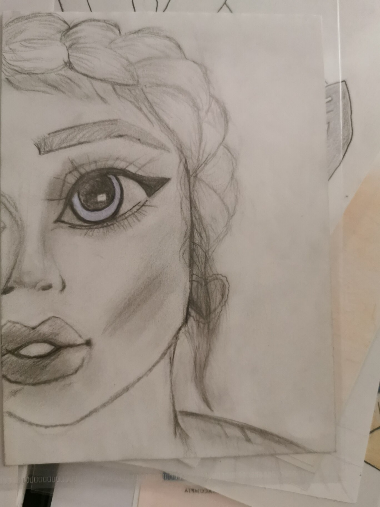

Drawing is a big love story that was born one day while I was shopping.
In fact, I always thought I was very bad at drawing. In college, art
classes were my big nightmare. Growing up, I was more and more
interested in art even if I must admit, I did not understand much about
it. As I was telling you, while shopping, I passed by the pencil
section, and I wanted to try. And yup, one of my passion was on the road
! It's obviously thanks to tutorials that I started, but I'm really
happy with the unexpected result given my past level, a miracle that
something drinkable came out of it. This is what I managed to do with a
seed of desire and belief in what my pencil was drawing.
